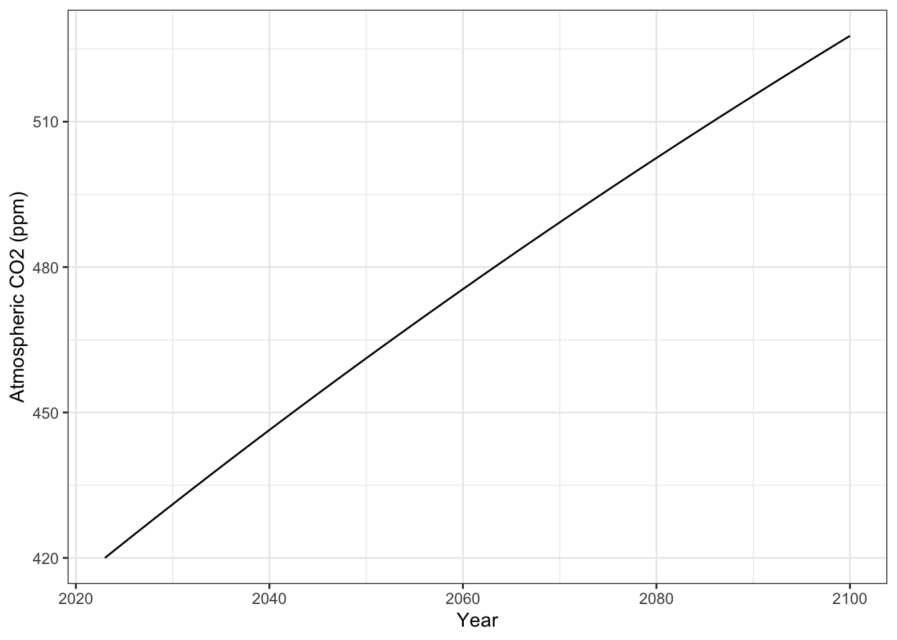
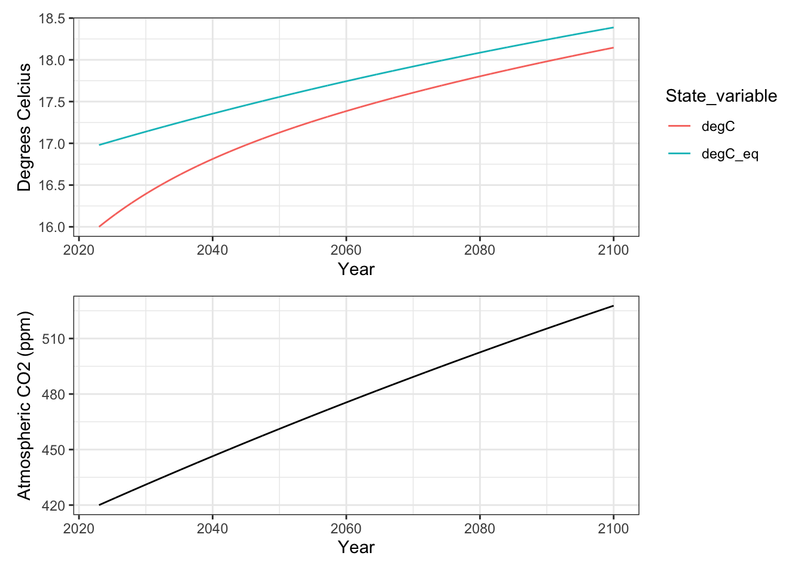

getwd()[1] "/Users/stevenmh/projects/intro_to_ecology"In this chapter, you will, address three related questions:
To address these questions, we will
One of the main the points of doing these activities is to help to develop an intuition for system thinking. Systems are “a group of interacting, interdependent parts that form a complex whole” and ecosystem ecology is a central subdisicpline of ecology and the one that has contributed the most to our understanding of climate change and ecosystem services.
The other main point of these activities is to reinforce simple ideas related to the global carbon cycle and global warming.
Open R using RStudio, and set your working directory. You can do this in two ways:
setwd("C:/Users/chenjoe/BIO209W/Rwork")You can confirm or get your current working directory using this:
getwd()[1] "/Users/stevenmh/projects/intro_to_ecology"so when I do that, you can see my working directory is the one for this book.
Before you proceed, make sure your working directory is your Rwork directory.
Next, use RStudio to create a new file of the type R script. Save it using a name that reflects this chapter, and end the file name with “.R” or “.r”.
Third, add a comment as a brief description of the script, and load any R packages you know you will need.
## This script is for chapter XX in Hank's Intro to Ecology primer.
## We always use...
library(tidyverse)
## or usually just ggplot2 and dplyr packages within the tidyverse.
## In this chapter we also need
library(deSolve)
# for solving or integrating differential equationsAn ecosystem is a biological community of interacting organisms and their physical environment. Ecosystem ecologists study an ecosystem by tracking a particular chemical element such as carbon (C) or nitrogen (N) through the environment. We conceive of the environment in terms of compartments that contain the element (a.k.a. pools, stocks) and movement between compartments (fluxes, inflows, outflows).
Examples of ecosystem budgets:
The ecosystem paradigm connects energy and matter to the evolution and ecology of life. Ecosystem scientists focus on the flow of energy or matter through all parts of the environment, especially as those flows are mediated by living organisms.
Why do we have so much carbon in the atmosphere? One answer to that question comes from simply tallying up the inputs and the outflows. In this sense, it is a lot like our household budget.
Ecosystem budgets are simple1, at least conceptually. An ecosystem budget is just like your household budget or bank account: if more money goes in than goes out, you accumulate money. In contrast, if you spend more money than you bring in, your wealth declines.
An ecosystem budget simply keeps track of the amount of a chemical element, such as nitrogen or carbon, that, is in a compartment, goes into a compartment, and leaves a compartment, over a specified time interval such as a year. The size of a pool or compartment is the amount of an element in that pool.
For a simple ecosystem carbon budget, the rate of change of the size of a pool is the difference between the input and the output over a specified time interval,
\[\Delta~\mathrm{Pool} = \mathrm{Inputs} - \mathrm{Outputs}\]
For instance, consider the carbon budget for Earth’s atmosphere from the 1990’s that we described in lecture. We had these inputs and outputs (units are petagrams, 10\(^{15}\) g):
At the time, the atmosphere held 762 Pg C mostly in the forms of carbon dioxide, carbon monoxide, and methane (CO\(_2\), CO, CH\(_4\)).
Given this budget, how much carbon would be in the atmosphere,
To figure this out with a simple budget, we simply start with the pool, add the inputs and subtract the outputs. \[\mathrm{Atmosphere_{t+1}} = \mathrm{Atmosphere_{t}} + \mathrm{inputs} - \mathrm{outputs}\]
# the pool
At <- 762
# fluxes
# separate statements with semicolons
or <- 91; ro <- 1; fi <- 4; cp <- 0.1; ff <- 7.6; lu <- 1.5; tr <- 56
inputs <- or + ro + fi + cp + ff + lu + tr
npp.o <- 92; we <- 0.2; ls <- 2.8; npp.l <- 60
outputs <- npp.o + we + ls + npp.l
net.flux <- inputs - outputs
net.flux[1] 6.2Atp1 <- At + net.flux
Atp1[1] 768.2What about two years later? What about 3 or 25 or 75 years later? If we choose to assume that these rates won’t change, the answer is easy, but only because we are working with a simple budget. We simply add the annual flux for each year, starting at year 0.
\[\mathrm{Atmosphere_{t}} = \mathrm{Atmosphere_{0}} + \mathrm{net~flux} + \mathrm{net~flux} + \ldots + \mathrm{net~flux}\] That is equivalent to multiplying the annual flux by the number of years, \(t\). \[\mathrm{Atmosphere_{t}} = \mathrm{Atmosphere_{0}} + \mathrm{net~flux}\cdot t\]
Now it is your turn to do that next for two years and for 25 years.
## write code two years and for 25 years
## Note that as long as these fluxes remain constant the system will continue to change at this rate. There is no equilibrium or balance of nature.
How does including the physical process of diffusion of alter predictions about future atmospheric carbon? A simple budget is a great starting place, but it ignores a lot of biological and physical reality. Here we add one piece of that reality: diffusion of CO\(_2\) between the air and water.
In the above example, carbon went into the atmosphere at a constant rate and left at a constant rate. What if a flux depends on the amount in the pool? It’s actually very common for a flux to depend on the amount in one or more pools. Here are some examples:
A first order flux is one in which each term in the rate equation depends on no more than one pool.
Imagine we have bathtub that we are filling with water, and that the drain has a leak. Just like with our simple budget above, rate of change in the depth (or height) of the water is \[\Delta \mathrm{height} = \mathrm{inflow} -\mathrm{outflow}.\]
Complication: while the inflow is fixed by the faucet, the outflow is determined by two things: how big the leak is, and how deep the water is or the height of the water in the tub. The deeper the water, the more pressure there is that pushes the water out faster. We can approximate that as \[\mathrm{Outflow} = e \cdot \mathrm{height}\] where \(e\) is a constant that depends on the size of the leak. As the height decreases, the outflow rate will decrease. With this detail, the rate equation is now, \[\Delta \mathrm{height} = \mathrm{inflow} -e \cdot \mathrm{height}\] and when the change in the height slows to zero (\(\Delta \mathrm{height} = 0\)), that means the depth will stop changing. That happens when, \[\mathrm{inflow} = e \cdot \mathrm{height}.\] We can solve for height to figure out what the height will be. Rearranging, we get,
\[\mathrm{height} = \frac{\mathrm{inflow}}{e}.\] We refer to this height as an equilibrium because it is predicted to not change.
Let’s see this operate in an ecosystem.
Let’s assume that at first approximation, the diffusion of CO\(_2\) from the atmosphere into the ocean is a first order process - that it is proportional to the amount of CO\(_2\) in the atmosphere. We can represent that in the differential rate equation \[\frac{dA}{dt} = I - eA\] where \(A\) is the amount of CO\(_2\) in the atmosphere, \(I\) is a constant flux, and \(e\) is the diffusion rate into the ocean.
Note that all of the uptake by the ocean is via diffusion, because it has to leave the air and move into the water in the process of diffusion. However, most of what moves into the water is captured via photosynthesis, by phytoplankton2, coral symbionts3, and kelp. The CO\(_2\) that is not captured this way increases in concentration and acidifies the ocean, as
\[\mathrm{CO_2 + H_2O \rightarrow H_2CO_3 \rightleftharpoons HCO_3^- + H^+ }\].
If we assume that in the ocean, photosynthesis is balanced by respiration, then we can pretend that the difference leads to ocean acidification. Using data presented above, that means that
respiration <- 91 # Pg
photosynthesis <- 91 # Pg
carbonic_acid <- 1 #PgWe will estimate the approximate value of \(e\) using the net carbon flux.
\[F_{oa} = \mathrm{photosynthesis }\]
If the net flux into the atmosphere were \(I=6.2\) Pg C/y, and the current diffusion rate out of the atmosphere is \(e=0.008\)/y4, what would happen? What is the predicted equilibrium and how fast would it get there?
Let’s ask R to show us the dynamics. First, we make an R function with the rate equation.
## simple first order equation.
## start
atmosphere1 <- function(t,y,p){
with( as.list(c(y, p)), {
## this is the bit to recognize
dA.dt <- I - e*A
return(list( c(dA.dt),
## convert gigatonnes C to CO2 equivalent mass
CO2_global_mass = A * (12 + 2*16)/12,
## convert gigatonnes C to CO2 equivalent ppm
CO2_ppm = A / 2.13
) )
})
}
## endNext, we tell R what parameters to use, and the initial amount of carbon in the atmosphere at time zero.
# Constant influx, and diffusion rate
p1 <- c(I=6.2, e=0.008)
# starting atmospheric carbon pool
y0 <- c(A=762);Next we tell R the time points we want it to show us. Let’s get annual estimates for 1000 years.
# from zero to 100, by steps of one year
t <- seq(from=0, to=1000, by=1)
# integrate the rate equation for all time points,
# starting with y0 at time zero, using our function and parameters.
output <- ode(y=y0, times=t, func=atmosphere1, parms=p1)Next we plot the dynamics of the atmospheric carbon. I have hidden the graphic in order to allow you to create it on your own.
# Finally, we plot the output.
out_df <- as.data.frame(output)
firstorderA <- ggplot(out_df, aes(time, A)) + geom_line() +
labs(y="Atmospheric carbon pool (Pg)",
x="Year") +
theme_bw()
firstorderA
ggsave("firstOrderAtmosphere.png", width=5, height=4)Next, solve the rate equation directly by setting \(\frac{dA}{dt} = 0 = I - eA\) and solving for \(A^*\), the equilibrium. \[A^* = \mathrm{?}\]
What does the above solution tell us should happen if \(e\) gets smaller? gets larger?
Two documents:
The first document is your R script (just the R script - do not save it in any other format).
The second document should provide the following written responses and quantities you calculated in R:

In this section we connect the carbon cycle to an entirely different set of fluxes, those of heat, or radiant energy.
What is the connection between atmospheric CO\(_2\) and temperature, and how does that relationship affect our appreciation of Earth’s current and future status? Most of us don’t care much about the amount of CO\(_2\) in the atmosphere (per se), but we care a lot about how CO\(_2\) and other greenhouse gases trap and re-radiate heat. In this section, we quantify this connection.
Nearly all of the heating of Earth’s atmosphere occurs when warmed land or ocean surface emits infrared radiation that is then captured by greenhouse gases which then re-radiate this energy. This all starts when our sun radiates energy that travels through space (Fig. Figure 13.3) and eventually encounters Earth’s atmosphere. That incoming radiation is high energy short-wave radiation which penetrates and passes through the atmosphere, and hits Earth’s surface. Most of this energy is absorbed, and then re-emitted as long-wave infrared radiation which we can experience as heat. It is this infrared radiation that is trapped by greenhouse gases prior to eventually exiting, back out into space (not shown in Fig. Figure 13.3).
Greenhouse gases re-radiate the heat they absorb. In doing so, they heat up Earth’s surface even more. Because of that, Earth’s surface never has a chance to really cool down, because it is always being re-warmed by the atmosphere that it made warm in the first place. The energy is bouncing back and forth between the atmosphere and the Earth’s surface (land and oceans). It also bounces back and forth between layers of the atmosphere. The energy will eventually find its way back into outer space, but not before it has bounced around a lot.
The flux of solar radiation (Fig. Figure 13.3) coming at Earth is about \(\Omega = 1372\) W/m\(^2\)5. However, because Earth is round, that energy get spread out and each square meter would receive only about a fourth of that, or \(\Omega/4\), if it all reached the surface. Thus, the effective incoming flux is \(F_{in} = \Omega/4\).
Unlike the incoming flux, the outgoing flux comprises two basic types of radiation (Fig. Figure 13.3). About 30% the incoming radiation is reflected back out into space, unchanged. It bounces off of clouds and snow and ice, and we refer to this reflectance as albedo. Thus, part of the outgoing flux is \(F_{out1} = a\cdot1372/4\), where \(a\) is for albedo which is about 0.3.
The second part of the outgoing flux is the infrared radiation that first bounces around the atmosphere before it makes its way out into the universe (Fig. Figure 13.3). The rate rate which that happens is proportional to the Stefan-Boltzmann constant6, \(\sigma\), which quantifies radiation emitted from a perfect black body in relation to it’s temperature. Needless to say, we won’t get into why it happens at that rate. What we will say is that the second part of the outgoing energy flux is \(F_{out2} = \sigma T^4\), where \(T\) is temperature in degrees Kelvin, and sigma is the Stefan-Boltzmann constant, \(\sigma \approx 5.67 \times 10^{-8}\). Or, at least it would be if we ignored greenhouse gases.
All together, we might approximate Earth’s energy flux as \[\Delta E_E = F_{in} - F_{out1} - F_{out2} = \frac{\Omega}{4} - a\frac{\Omega}{4} - \sigma T^4\] if we ignore the effect of greenhouse gases.
If we want to express temperature at equilibrium in terms of fluxes, we set \(\Delta E_E = 0\) and solve for \(T\), \[F_{in} = F_{out1} + F_{out2}\] and using algebra to rearrange, and we get \[T^4 = \left(1-a\right)\frac{\Omega}{4\sigma}\] or,
\[T = \left[ \left(1-a\right)\frac{\Omega}{4\sigma} \right] ^{1/4}\] where \(T\) is degrees Kelvin.
If we calculate the predicted temperature, what would we get? Here is code that can help you answer that.
Omega <- 1372
sigma <- 5.67e-8
albedo <- 0.3
temp_K <- ( (1-albedo) * Omega/(4*sigma) )^(1/4)
temp_KAs we mentioned, the above approximation ignores the effect of greenhouse gases. Thousands of scientists around the world are attempting to model Earth’s energy balance, including the dynamics and effects of greenhouse gases that trap outgoing radiation. That research is well beyond the scope of this class, but we will approximate the relationship.
We will approximate the effect of greenhouse gases by merely adjusting the Stefan-Boltzmann constant by an amount related to the amount of CO\(_2\) in the atmosphere, \(A^g\), where \(A\) is the CO\(_2\) concentration in parts per million (~420 ppm in 2023), and \(g\) is what I call Hank’s greenhouse constant. This gives us \(F_{out2} = \sigma A^g T^4\).
We can now rewrite the predicted atmospheric temperature as
\[T = \left[ \left(1-a\right)\frac{\Omega}{4}\frac{A^g}{\sigma} \right] ^{1/4} + \epsilon\] where \(\epsilon\) is statistical error or residual.
Let’s use the above equation to reinforce our understanding of how atmospheric temperature is a function7 of the amount of carbon compounds in the atmosphere (\(T = F(A)\)).
First, we re-inject meaning into the equation:
Re-writing the equation, we have \[ \mathrm{temp = fraction \times incoming~rad \times} \frac{\mathrm{CO}_2~ \mathrm{heat~trapping}}{\mathrm{radiant~loss}}\]
Hank’s greenhouse constant \(g\) is just a statistically-fitted constant to draw a smooth curve through known temperatures that researchers have shown would occur at CO\(_2\) concentrations of (0, 280, 450 ppm). These concentrations reflect zero, pre-industrial, and near future CO\(_2\) predictions. These concentrations have been shown to result in predicted temperatures 255, 288, and 290 deg K.
Note that we can represent heat trapping gases in the atmosphere as “CO2-equivalents”, which represent all of the carbon based molecules that help trap heat, especially carbon dioxide (CO2) and methane (CH4). These relate directly to the total amount of carbon in the atmosphere. The total mass of carbon in gigatonnes is about 2.13 times the CO2 concentration in ppm (parts per million). The total mass of carbon dioxide (CO2) in gigatonnes is about 7.82 times the CO2 concentration in ppm (source ).
Hank’s greenhouse constant is related to the radiative forcing of greenhouse gases. Radiative forcing is the potential for a system to undergo energy change.
Using the fitted expectation of \(g = 0.0849\) gives us the following:
## graphing the curve of temperature vs. CO2
g <- 0.08488
Omega <- 1372
sigma <- 5.67e-8
albedo <- 0.3
# function to describe the relationship
predict.warming <-
function(x, g, Omega, sigma, albedo){
((1-albedo)*Omega/(4*sigma)*x^g )^(1/4)
}
base <- ggplot() + lims(x=c(0, 500), y=c(250,300))
base +
geom_function(fun = predict.warming,
args = list(g = g, Omega, sigma, albedo),
n=5001) +
annotate(geom="point", x=c(0, 280, 450),
y=c(250, 288, 290) ) +
labs(
x="Carbon dioxide (ppm)",
y="Predicted temperatures",
) +
theme_bw()All this math is important for several reasons.
First, we want to estimate both the expected temperatures now, and also what the temperature would become even if we stop emitting any greenhouse gases today.
Second, we all need practice understanding quantitative approximations. Also known as “back of the envelope calculations”, these rough estimates give us approximate information about our world so that we can make timely decisions. We cannot wait for answers with ten sig-figs of precision. Here are some important questions to which there is no single answer, but for which approximations can help:
We live better lives when we are comfortable with good quantitative approximations.
Third, and finally, it’s just nerdy-fun to realize that this is really how the planet works!
One important reason that we are creating rate equations is because what we observe now is not what we will get in the future. Solving rate equations over time shows us change through time, not just the end result.
Because the amount of atmospheric CO\(_2\) is constantly increasing, the temperature has never caught up to what it would become if CO\(_2\) weren’t steadily increasing.
Here is an analogy. You put a pot of cold water on the stove. You turn the burner to “high” and the gas ignites or the coils start to glow red. The burner is emitting heat, but the water is not yet boiling. In this analogy, the water is the atmosphere and the burner is the increasing greenhouse gases. The temperature difference between the burner and the water is the radiative forcing. On Earth, the greenhouse gases are accumulating and trapping lots of heat energy, but Earth has not yet warmed up as much as it would given the current levels of greenhouse gases.
So, now we know there is a lag or delay between greenhouse gas concentrations and atmsopheric temperatures. What we DON’T know is how big is this lag between CO\(_2\) concentration and temperature actually is. Is the lag only a day, or year, or is it longer, like a decade or a century? Quantifying the importance of the lag is the kind of thing that only a quantitative model can tell us.
In order to explore these connections between greenhouse gases and global temperatures, and the lag between them, we will do several simulations to examine the consequences of our assumptions. In each case, we will track atmospheric carbon concentration and temperature to 2100. This interval of less than 80 years is likely to be about the life span of you, or your children if you have any, or your young nieces and nephews.
For each simulation, you will run the simulation, make a graph of its outputs, and extract certain data from the output data sets, specifically,
Remember that the equilibrium temperature is the temperature to which the atmosphere will eventually rise if kept at a particular CO2 concentration. In contrast the modeled “observed” or contemporaneous temperature is the temperature that we are predicted to experience at any moment in time, given the changing CO2 concentrations and background uptake rates.
To do these simulations, we need a set of rate equations that incorporate everything we have covered above. Here they are, in one R function. Copy and paste this into your R script, and run it so that R creates this function in its working memory.
Earth1 <- function(t,y,p){
with( as.list(c(y, p)), {
## hypothesized relation of carbon inputs and outputs for
## the atmosphere
## constant input I, diffusion loss out eA
## CO2 rate equation, units CO2 / year
dA.dt <- I + (1-A/280)
## incoming radiant energy
F.in <- Omega/4
## outgoing radiant energy
F.out <- a*Omega/4 + (sigma/A^g)*K^4
## heat energy rate equation
dK.dt <- (F.in - F.out)/lag
## What the temperature WOULD be,
## without a lag
Equilibrium_K = ( (1-a) * Omega / (4*(sigma)) * A^g )^(1/4)
### Have R return these results to us
return(list( c(dA.dt, dK.dt) ,
K_eq = Equilibrium_K
) )
})
}For all our simulations, we’ll simulate the years from 2023 to 2100. We will consider 2023 to be time zero (\(t=0\)), and project every week until 2100 (\(t=77\)).
t <- seq(0, 77, 1/52)Next, we specify initial state of the system, including carbon concentration and temperature.
y0 <- c(A=420, # CO2 equivalents in ppm in 2023
K=289 # degrees Kelvin in 2023
)Finally, and as always, make sure that you have loaded functions we will need, as you did for the beginning of this chapter.
library(tidyverse) # data wrangling and graphics
library(deSolve) # for numerical integration of ODE modelsHere we simulate some of the situations we discussed above. First, let’s assume business as usual, that our net greenhouse emissions continue as they have been. Those emissions result in a net increase of about 2.1 ppm (\(I=2.1\)). We specify particular constants or parameters for our equations. We create a vector of those here.
parameters1 <- c(Omega = 1372, # incoming solar radiative forcing
a=0.3, # albedo
sigma = 5.67e-8, # Stefan-Boltzmann constant for radiative loss
g = 0.08488, # greenhouse constant
I = 2.1, # increase in CO2 ppm per year
lag = 50 # lag time to partial temp equilibration
)Next we project the dynamics of atmospheric carbon and temperature, starting at a particular concentration and temperature (y0), for particular times in the future (t), using our system of equations (Earth), and particular values of each parameter (parameters1, including I=2.1).
output1 <- ode(y=y0,
times=t,
func=Earth1,
parms=parameters1)
head(output1) time A K K_eq
[1,] 0.00000000 420.0000 289.0000 289.9797
[2,] 0.01923077 420.0308 289.0012 289.9802
[3,] 0.03846154 420.0615 289.0025 289.9806
[4,] 0.05769231 420.0923 289.0037 289.9811
[5,] 0.07692308 420.1231 289.0050 289.9815
[6,] 0.09615385 420.1538 289.0062 289.9820The first six lines of data show us daily predicted changes in atmospheric carbon (A), temperature (K), and what the temperature would be at equilibrium *if the temperature could catch up to the increasing CO2 concentrations (K_eq).
What is the equilibrium temperature for 2023, and how much higher is it compared to the current temperature?
Here are the last six lines of the data set, leading up to the year 2100.
tail(output1) time A K K_eq
[4000,] 76.90385 527.5948 291.1446 291.3865
[4001,] 76.92308 527.6182 291.1449 291.3868
[4002,] 76.94231 527.6416 291.1452 291.3871
[4003,] 76.96154 527.6649 291.1455 291.3874
[4004,] 76.98077 527.6883 291.1459 291.3876
[4005,] 77.00000 527.7117 291.1462 291.3879Based on these data, what is the equilibrium temperature for 2100, and how much higher is it compared to theobserved temperature predicted for 2100?
Use this code to make a graph of this output.
p1.1 <- output1 %>% as.data.frame() %>%
mutate(
Year = time + 2023
) %>%
ggplot(aes(x=Year, y=A)) +
geom_line() + labs(y="Atmospheric CO2 (ppm)") +
theme_bw()
p1.1
ggsave("Exp1_CO2.png", plot=p1.1)Saving 7 x 5 in imageNow make a graph of temperatures.
out.long1 <- output1 %>% as.data.frame() %>%
select(time, K, K_eq) %>%
transmute(
Year = time + 2023,
degC = K -273,
degC_eq = K_eq -273
) %>%
pivot_longer(cols=-Year, names_to = "State_variable",
values_to="Value")
p2.1 <- ggplot(out.long1, aes(x=Year, y=Value, color=State_variable)) +
geom_line() +
labs(y="Degrees Celcius") +
theme_bw()
p2.1
ggsave("Exp1_temps.png", plot=p2.1)Saving 7 x 5 in imageIf you want to put two graphs together, I recommend you install the patchwork package, and then load it.
# eval: false
# uncomment and run
# install.package("patchwork", dep=TRUE)
# after installation, load it:
library(patchwork)
# use it.
# try
p2.1 / p1.1
# or
p1.1 + p2.1
ggsave("Exp1_CO2andK.png", height=4, width=8)Here we make one change: \(I=0.5\) in the parameters so that we keep CO2 at 420 ppm.
parameters2 <- c(Omega = 1372, # incoming solar radiative forcing
a=0.3, # albedo
sigma = 5.67e-8, # Stefan-Boltzmann constant for radiative loss
g = 0.08492, # greenhouse constant
I = 0.5, # increase in CO2 ppm per year
lag = 50 # lag time to partial temp equilibration
)Rerun the model, keeping everything else the same.
output2 <- ode(y=y0, times=t, func=Earth1, parms=parameters2)
tail(output2) time A K K_eq
[4000,] 76.90385 420 289.9911 289.9972
[4001,] 76.92308 420 289.9911 289.9972
[4002,] 76.94231 420 289.9911 289.9972
[4003,] 76.96154 420 289.9911 289.9972
[4004,] 76.98077 420 289.9911 289.9972
[4005,] 77.00000 420 289.9911 289.9972Use this code to make a graph of this output.
p1.2 <- output2 %>% as.data.frame() %>%
mutate(
Year = time + 2023
) %>%
ggplot(aes(x=Year, y=A)) +
geom_line() + labs(y="Atmospheric CO2 (ppm)") +
theme_bw()
p1.2
ggsave("Exp2_CO2.png", plot=p1.2)Now make a graph of temperatures.
out.long2 <- output2 %>% as.data.frame() %>%
select(time, K, K_eq) %>%
transmute(
Year = time + 2023,
degC = K -273,
degC_eq = K_eq -273
) %>%
pivot_longer(cols=-Year, names_to = "State_variable",
values_to="Value")
p2.2 <- ggplot(out.long2, aes(x=Year, y=Value, color=State_variable)) +
geom_line() +
labs(y="Degrees Celcius") +
theme_bw()
p2.2
ggsave("Exp2_temps.png")Here we make one change: \(I=0.357\) in the parameters so that we begin to drive atmospheric CO2 concentration down toward 1980 levels (338 ppm).
parameters3 <- c(Omega = 1372, # incoming solar radiative forcing
a=0.3, # albedo
sigma = 5.67e-8, # Stefan-Boltzmann constant for radiative loss
g = 0.08492, # greenhouse constant
I = 0.357, # increase in CO2 ppm per year
lag = 50 # lag time to partial temp equilibration
)Rerun the model, keeping everything else the same.
output3 <- ode(y=y0, times=t, func=Earth1, parms=parameters3)
tail(output3) time A K K_eq
[4000,] 76.90385 410.3837 289.8742 289.8547
[4001,] 76.92308 410.3816 289.8742 289.8546
[4002,] 76.94231 410.3795 289.8742 289.8546
[4003,] 76.96154 410.3774 289.8741 289.8546
[4004,] 76.98077 410.3754 289.8741 289.8545
[4005,] 77.00000 410.3733 289.8741 289.8545Use this code to make a graph of this output.
p1.3 <- output3 %>% as.data.frame() %>%
mutate(
Year = time + 2023
) %>%
ggplot(aes(x=Year, y=A)) +
geom_line() + labs(y="Atmospheric CO2 (ppm)") +
theme_bw()
p1.3
ggsave("Exp3_CO2.png", plot=p1.3)Now make a graph of temperatures.
out.long3 <- output3 %>% as.data.frame() %>%
select(time, K, K_eq) %>%
transmute(
Year = time + 2023,
degC = K -273,
degC_eq = K_eq -273
) %>%
pivot_longer(cols=-Year, names_to = "State_variable",
values_to="Value")
p2.3 <- ggplot(out.long3, aes(x=Year, y=Value, color=State_variable)) +
geom_line() +
labs(y="Degrees Celcius") +
theme_bw()
p2.3
ggsave("Exp3_temps.png", plot=p2.3)Include two documents; the first is your R script.
In the second document, provide results for each experiment (1-3). For each experiment include a graph of CO2 concentration and a graph of observed and equilibrium temperatures, as well as these data:
At the end, use your data and figures to tell the story of how our activities alter the planet. Be sure to mention how we have not yet experience the consequences of greenhouse gases that we have already produced.
In sum, your one document should include results of three experiments and then a short narrative or story explaining what your simulations show.
A zeroth order flux is one in which the rate depends on the amounts in zero pools - it doesn’t depend on pools.↩︎
floating single-celled algae↩︎
dinoflagellates Symbiodinium↩︎
Units for e are Pg C lost per Pg C in the atmosphere per y; the Pg/Pg cancels out, leaves “per year” or 1/y.↩︎
a watt is a energy per second, technically one Joule per second, J/s↩︎
This constant derives from Plank’s constant, the speed of light in a vacuum, Boltzmann’s constant relating temperature to kinetic energy, and of course, \(\pi\), the ratio of the diameter of a circle to its circumference. Well, of course it does….↩︎
We can represent any function with ‘F()’, so “some function of X” could be written as F(X).↩︎